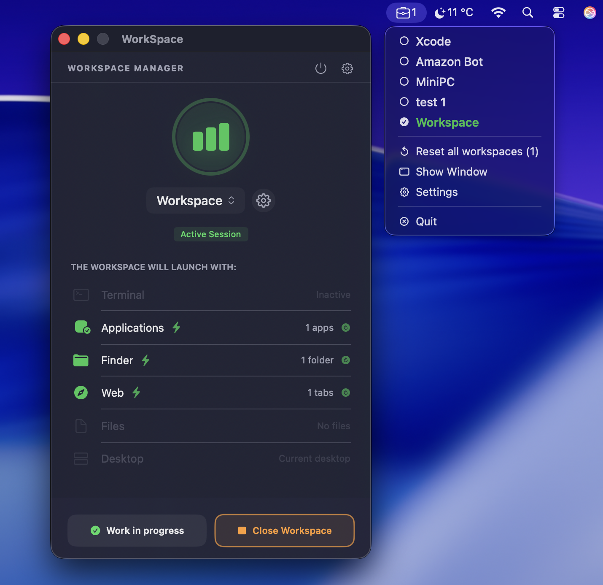
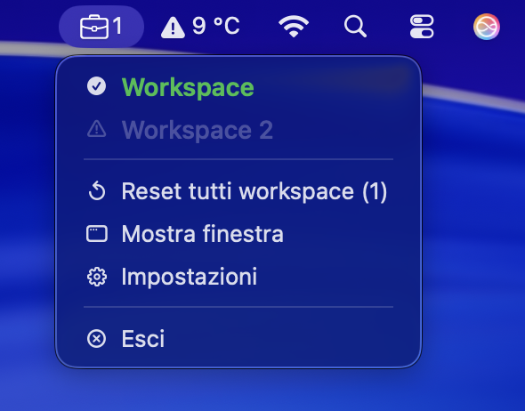
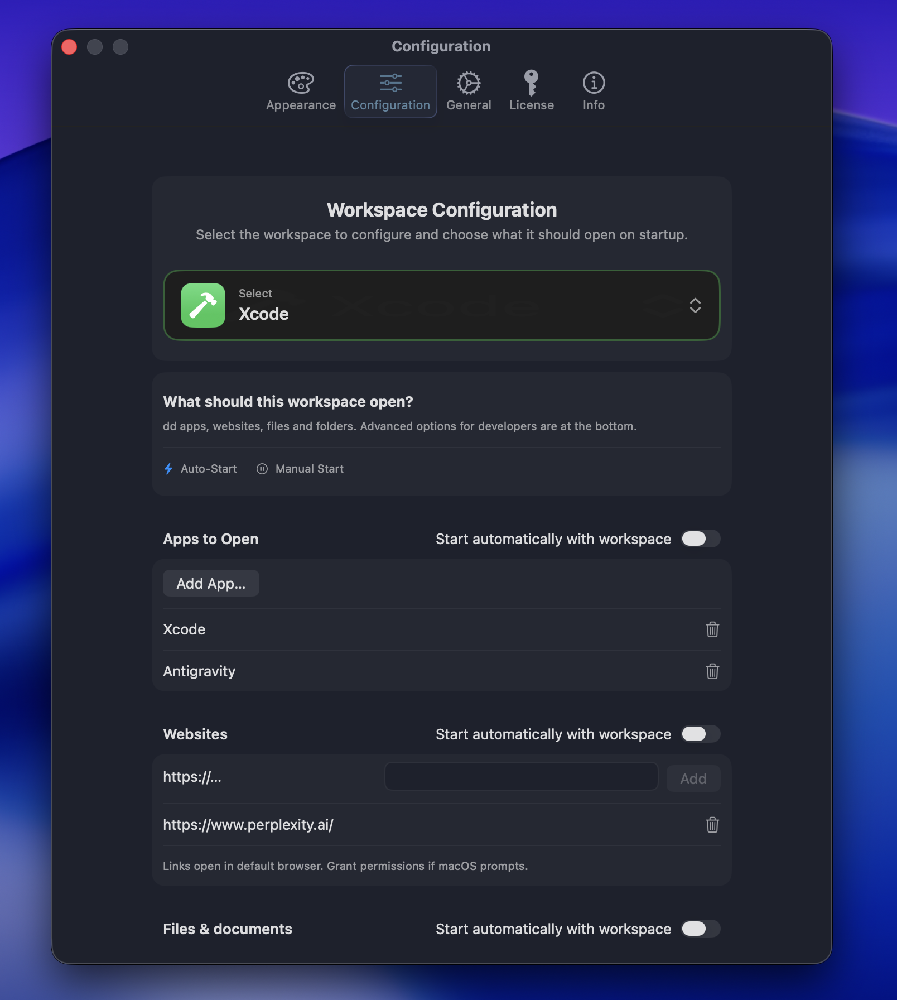
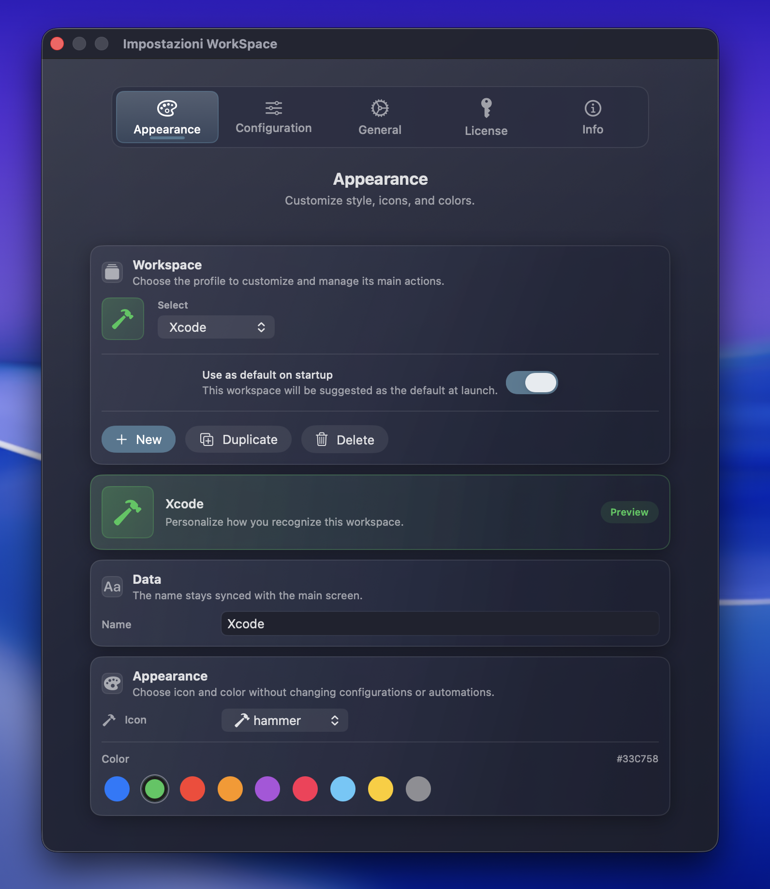
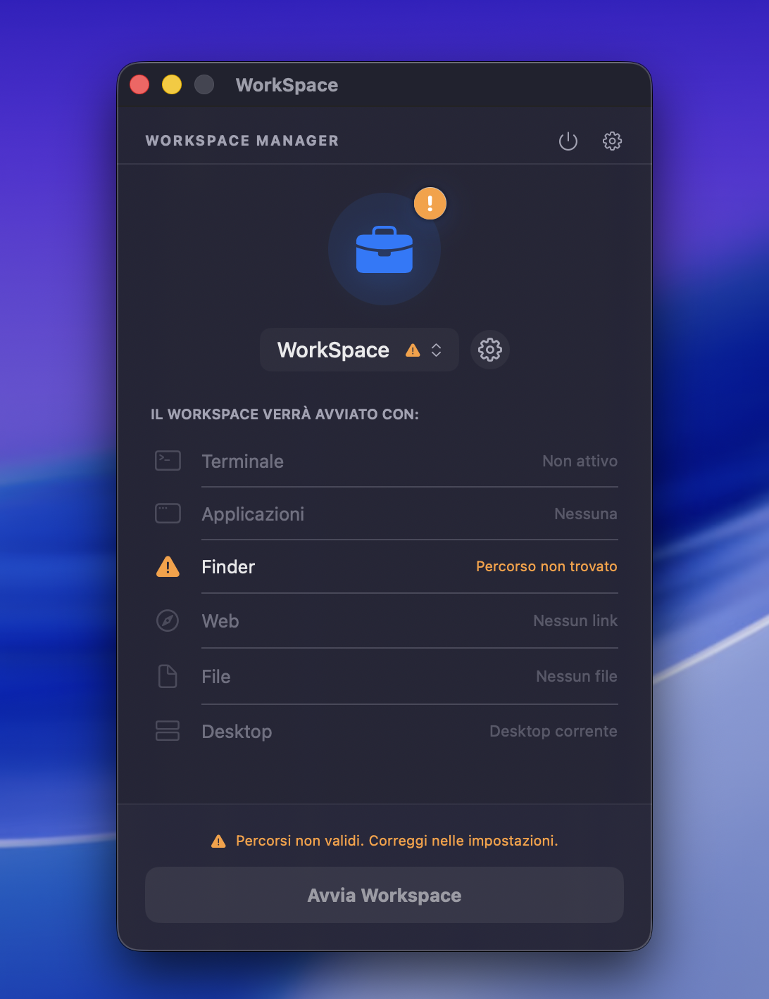

1 / 5
Basta cliccare icone una alla volta. Apri tutte le tue App, Siti Web e Cartelle in un solo colpo. Organizza il tuo lavoro in Workspaces intelligenti.
Richiede macOS Sonoma o superiore

Guadagna 15 minuti di focus ogni volta che cambi progetto.
In 1 secondo apre:
Proteggi l'accesso ai tuoi progetti. Sblocca l'app istantaneamente con la tua impronta digitale.
Interfaccia completa in Italiano e Inglese (EN/IT) selezionabile.
Scegli tra tema Light, Dark o sincronizza automaticamente con macOS.
Esporta i tuoi workspace in JSON e ripristinali ovunque in un attimo.
Richiama i tuoi work preferiti direttamente da tastiera.
Presentazione al primo avvio per imparare subito le funzioni (rivedibile).
Imposta un workspace di default per un accesso ancora più rapido.
Pulisci tutta la configurazione e riparti da zero con un click.
Controlla tutto dalla barra dei menu. Ora completamente riscritta per consumare ancora meno RAM.

Clicca sulle immagini per ingrandirle e vedere i dettagli.



WorkSpace Manager è ufficialmente Notarizzato da Apple. Nessun avviso strano, nessun trucco. Solo software pulito e sicuro per il tuo Mac.
Scarica l'ultima versione certificata direttamente dai nostri server sicuri GitHub.
Trascina l'icona nella cartella Applicazioni. Niente installer invasivi o file nascosti.
Gatekeeper verificherà la firma Apple Developer ID e l'assenza di malware. Sicurezza garantita al 100%.
Scarica la versione di prova illimitata nel tempo. Sblocca le funzioni Pro quando sei pronto.
v2.0.0 • macOS Sonoma+
Puoi attivarlo su 2 dispositivi
Contattami direttamente, rispondo entro 24h.
Assolutamente. WorkSpace Manager è firmata digitalmente con un Apple Developer ID e autenticata (Notarized) dai server Apple per garantire l'assenza di malware.
Le app sull'App Store sono "chiuse" in una sandbox. Per aprire file, terminali e gestire le tue finestre, WorkSpace Manager necessita di permessi di sistema che lo Store limita.
No. La licenza Lifetime è un acquisto unico. Paghi una volta ed è tua per sempre, inclusi tutti gli aggiornamenti futuri della versione 2.x.
Una singola licenza personale ti permette di attivare l'app su 2 Mac (ad esempio il tuo iMac fisso e il MacBook portatile).